QGIS AT A GLANCE
- 🌍 Used by millions worldwide — across cities, forests, disaster zones, farms, …
- 💻 Runs on Linux, Windows, macOS — and Android, iOS via apps
- 🗣️ Available in 100+ languages thanks to our global community
- 🔁 Updated every 4 months with regular releases
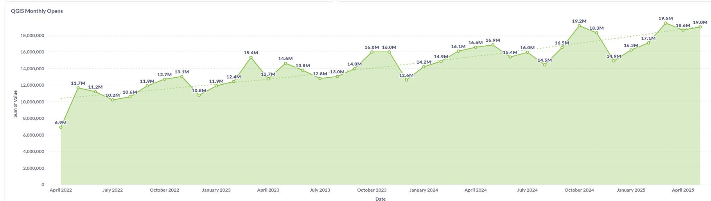
THE PATH TO OPEN
USA
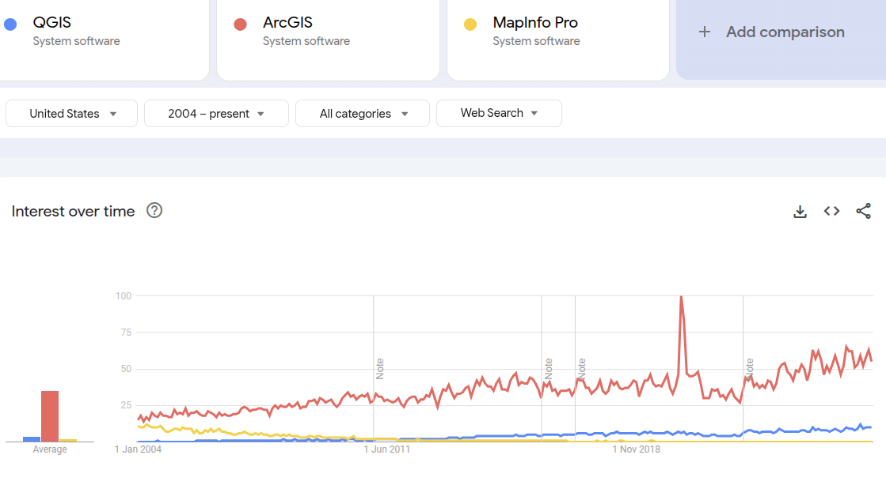
THE PATH TO OPEN
AUSTRALIA
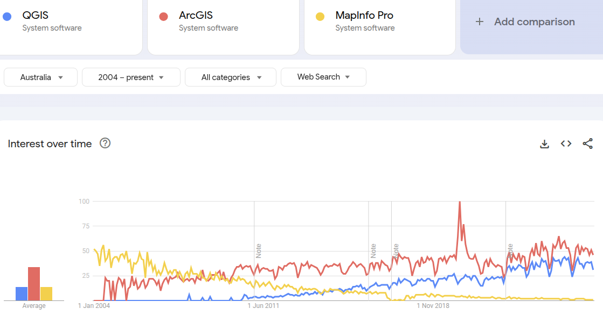
THE PATH TO OPEN
SWITZERLAND
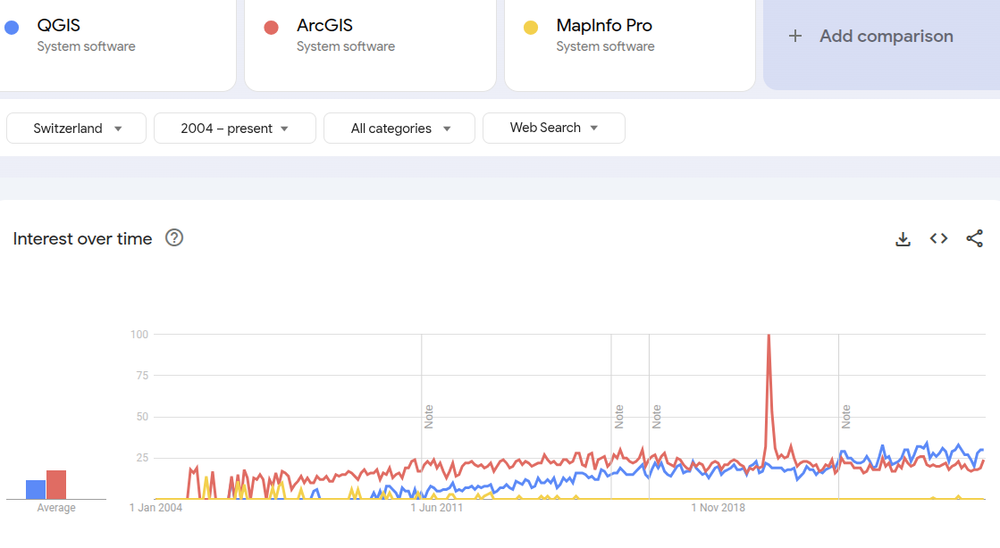
THE PATH TO OPEN
JAPAN
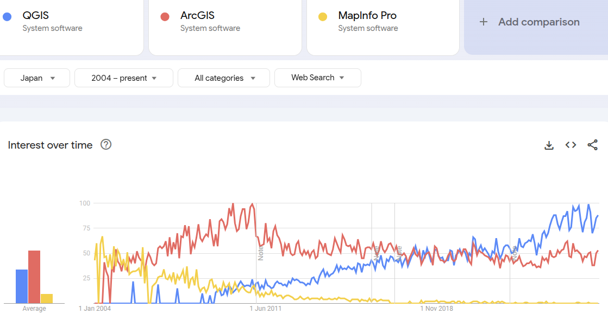
THE PATH TO OPEN
FRANCE
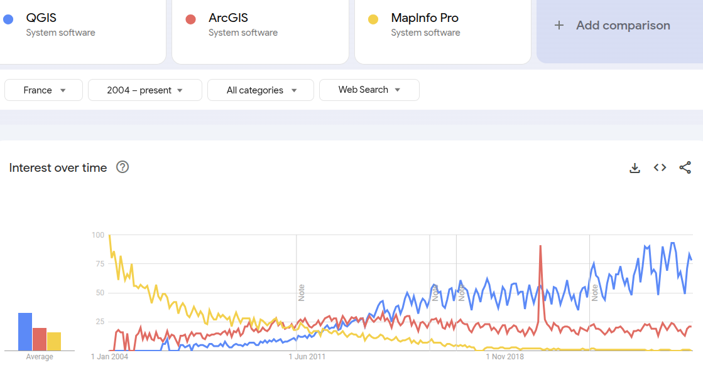
THE PATH TO OPEN
WORLD
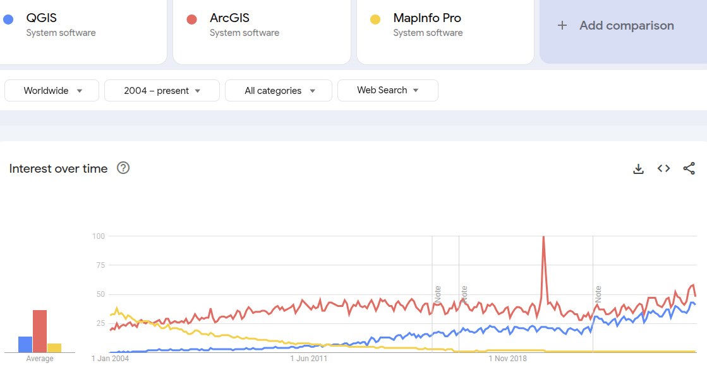
QGIS IS A DIGITAL PUBLIC GOOD
- ✅ Officially recognized by the Digital Public Goods Alliance in 2025
- 🎯 Meets DPG standards: open-source, privacy-respecting, inclusive, and aligned with the UN Sustainable Development Goals (SDGs)
- 🌱 Supports global causes: climate action, urban planning, disaster response, public health
- 🧩 Strengthens QGIS’ role in international cooperation — especially with governments, NGOs, and educational institutions
- 🙌 Reinforces our commitment to building digital infrastructure that’s open, accessible, and ethical
COMMUNITY FIRST

PROFESSIONAL USAGE

HOW IS QGIS SUSTAINED?
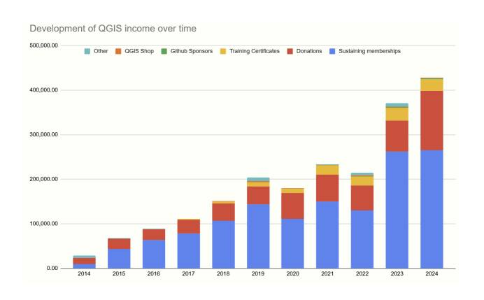
WHO SUSTAINS? 💚

FINANCIAL GROWTH & TRANSPARENCY
But it’s not just about growth — it’s about how we use it.
- Bug fixing is our largest single allocation — this keeps QGIS stable and production-ready
- Infrastructure (build systems, servers, packaging) ensures we scale reliably
- Documentation gets a dedicated budget and full-time writer
- And then there’s the Grant Programme, supporting community-driven innovation
All of it is published publicly in our financial reports.
GRANT PROGRAM 2024-2025
- 💡 Direct investment in our community
- 🛠️ 2024 grants focused on usability, performance, and real user needs
- 🧱 Supports core foundations: not flashy, but essential
- 🚀 Adds innovation and responsiveness on top of ongoing work
- 🤝 Powered by the community — for the community
QGIS 4.0
- 4.0 Coming February 2026
- The LTR will follow in QGIS 4.2, scheduled for mid 2026
- New welcome screen
- Qt6 only
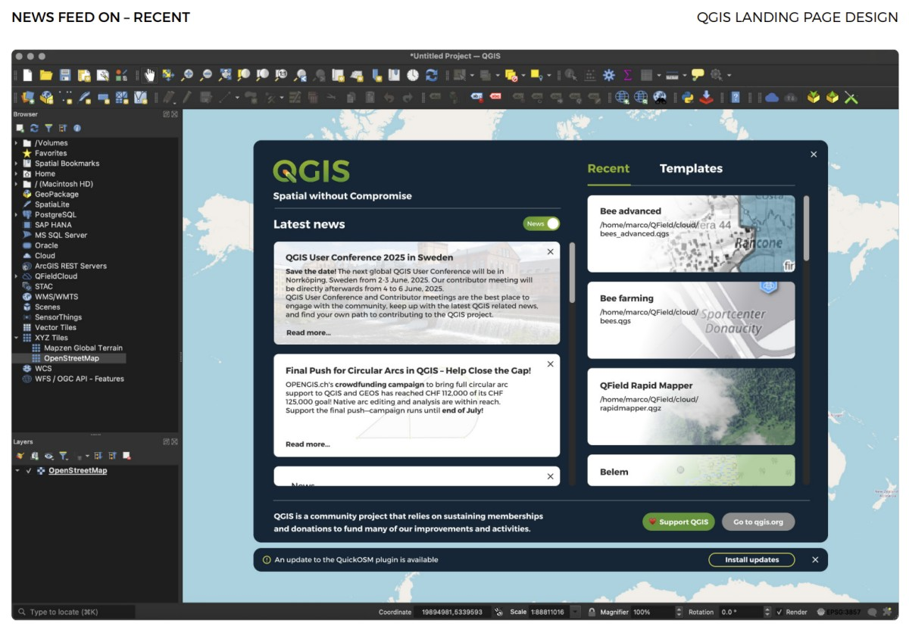
The goal: make the transition as smooth and low-risk as possible.
MACOS PACKAGE IMPROVEMENTS
- Builds now use vcpkg for better maintainability
- It’s already proven to work — Already done for QField
- Notarised builds of QGIS for macOS are available
- 3.44 LTR + 4.0 dev
The ONLY professional user experience across all major platforms.
HARMONISED QGIS WEBSITES
We’ve also made huge progress on the QGIS web ecosystem.
Multiple QGIS sites have been updated to reflect a unified design and experience:
- hub.qgis.org
- plugins.qgis.org
- feed.qgis.org
- planet.qgis.org
- certification.qgis.org
- uc2025.qgis.org
This harmonisation means better UX, seamless transitions across platforms, and easier navigation for all users.
HARMONISED QGIS WEBSITES

DOCUMENTATION WEBSITES
Next year:
- user manual
- training materials
- developer docs (?)
PLUGIN ECOSYSTEM HEALTH
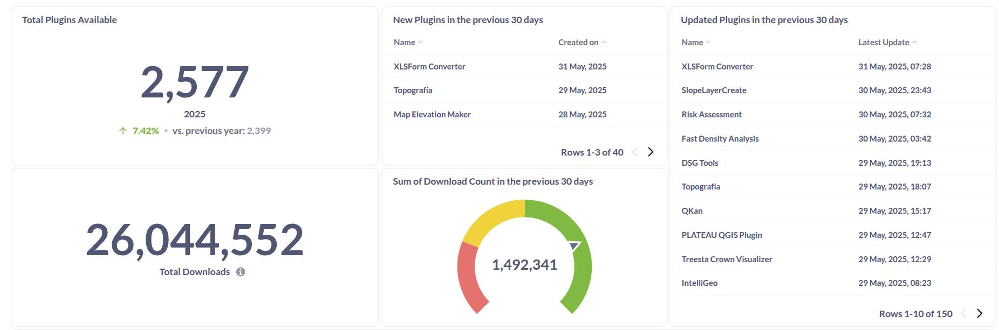
NEW CONTRIBUTORS SECTION
ORGANISATIONS
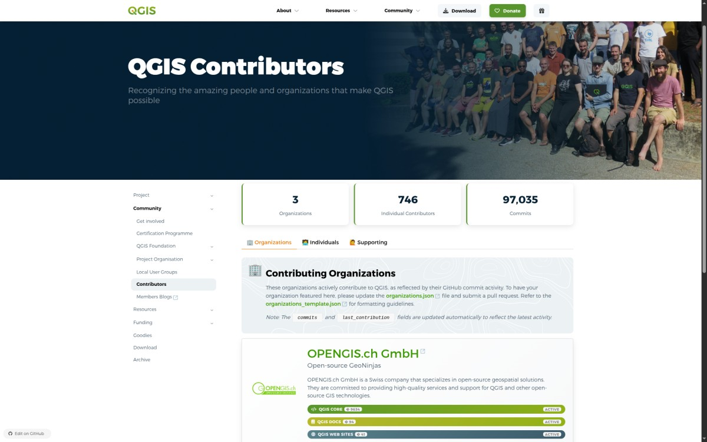
NEW CONTRIBUTORS SECTION
INDIVIDUALS
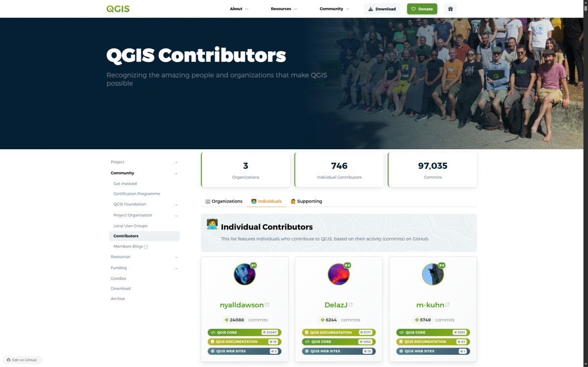
QGIS FEED STRATEGY

QGIS FEED STRATEGY
Allows us to:
- Push out short-lived, high-value news
- Stay in sync with releases, updates, events
- Give you fresh content every few days
We’re aiming for frequent posts — with most having a validity of 10 days or less. It’s quick, timely, and always relevant.
LOOKING AHEAD
So what’s next?
We’re not just thinking about patches and features — we’re thinking long-term strategy:
- A more cohesive documentation experience
- A language that can speak to big organisations decision makers
- Secure, modern packages for every platform
- Smarter build pipelines (trying to reduce energy consumption if possible)
- And a community that stays open, welcoming, and global
CURRENT INITIATIVES
- Website translation: Led by QGIS.org, focusing on getting the main website translatable
- Vision & Mission statements: Tim & Marco, focusing on getting a clear messaging out
- Security Initiative: Led by Oslandia and OPENGIS.ch, focusing on hardening the platform and improving secure development practices